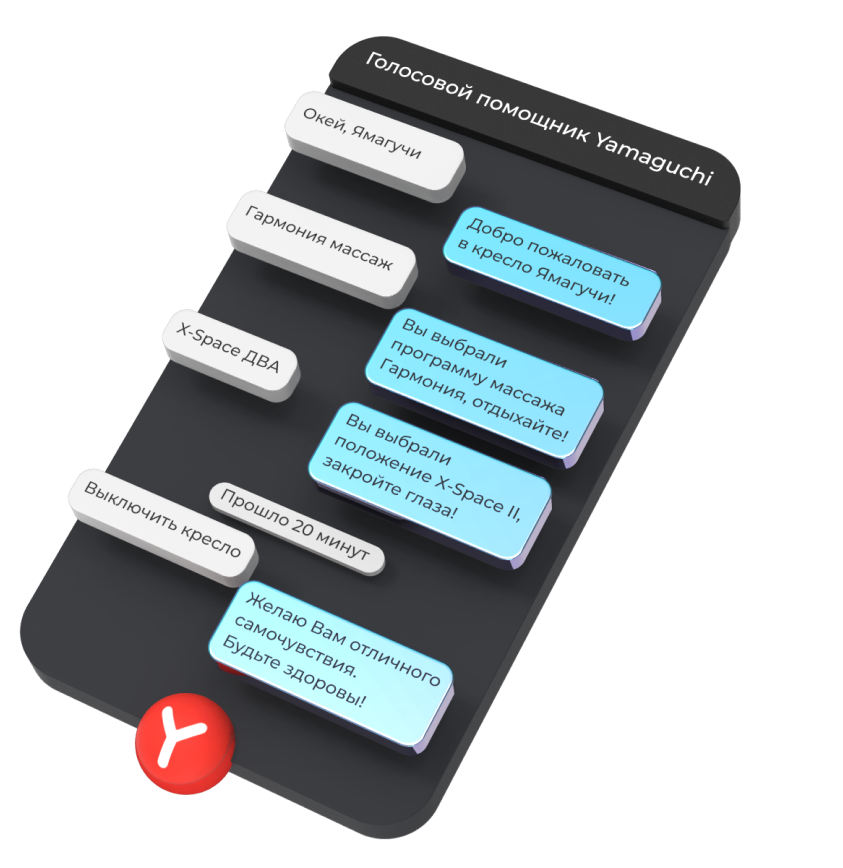

Yamaguchi
Voice Control
Вы можете управлять программами массажа или самим креслом с помощью голосовых команд, приведённых ниже. Коснитесь кратковременно кнопки голосового управления, расположенной на левом подлокотнике, для запуска сеанса голосового управления.
Произнесите одну из доступных команд. Если произнесённая команда распознана, вы услышите ответ и кресло приступит к выполнению запроса.

